🎬 Film dossier · English through story
Red Joan: The Fractured Dossier — Learning the Language of Loyalty and Betrayal from Trevor Nunn’s 2018 Spy Film
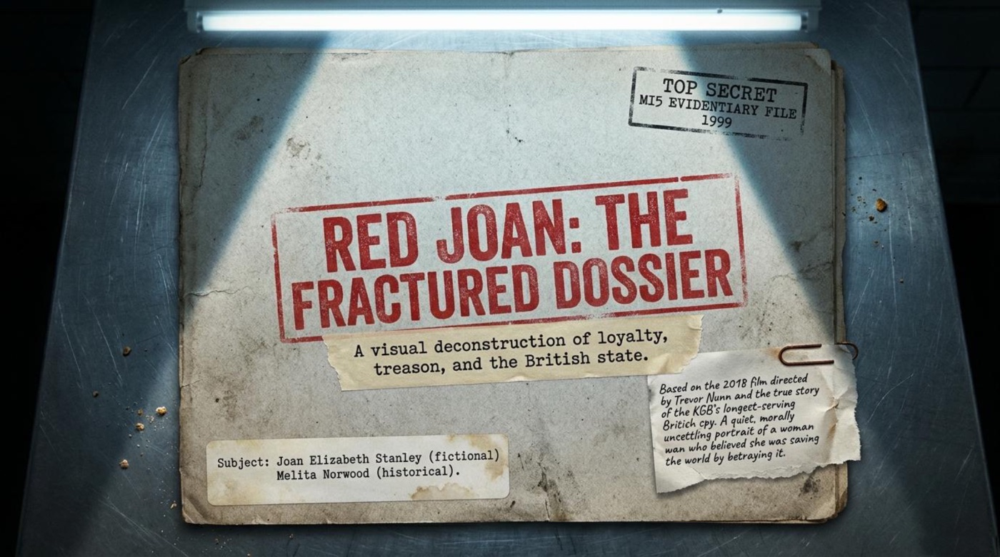
In 1992, a batch of smuggled Soviet archives unmasked an eighty-seven-year-old grandmother from Bexleyheath as the — the Soviet Union’s main intelligence service, responsible for foreign espionage throughout the Cold War.’s longest-serving British spy. — the historical clerk and KGB agent (1912–2005) whose real case inspired the fictional Joan Stanley. had spent decades quietly passing nuclear secrets to Moscow, and the newspapers crowned her the “granny spy”. She was never prosecuted, and she kept living her quiet suburban life, drinking Co-op tea and handing out the — the British socialist daily newspaper that Norwood handed out near her home in Bexleyheath..
The visual dossier Red Joan: The Fractured Dossier takes this astonishing true story and the film it inspired, and turns them into “a visual deconstruction of loyalty, treason, and the British state.” Its subject line holds the whole game together: “Joan Elizabeth Stanley (fictional), Melita Norwood (historical).” The presentation describes the film as “a quiet, morally unsettling portrait of a woman who believed she was saving the world by betraying it,” and that sentence is also the reason the material works so well for English learners. The dossier is dense with idioms, collocations and the precise vocabulary of secrecy, and this article unpacks all of it — the story, the language, the symbols — before closing with an interactive comprehension check.
📚 Part One · Content and Context — The Story Inside the File
The dossier opens: a granny in the dock
The film runs on two clocks. In the present, an eighty-something grandmother on a quiet suburban street is arrested, and the charges reach back half a century. The dossier describes her position in one cold line:
“Charged under the Official Secrets Act, 50 years after the fact. Vilified by the tabloid press as ‘Red Joan’.”
The presentation, section “The Central Dilemma”
The word vilified tells the reader everything about the mood of 1999, because the press did not simply report her story — it performed a public execution of her character. The other pole of the dilemma belongs to 1938, and the same file describes that younger self as “A green but genius physics student, seduced by radical politics and the promise of societal justice.” The presentation is explicit about the film’s method: “The film refuses a clean resolution.” Joan is presented as a malicious Soviet agent, as a naive wide-eyed student, and as a woman who believed the world needed saving from itself, and the audience is left to weigh those three portraits against each other. The tension between those readings is the engine of the entire story.
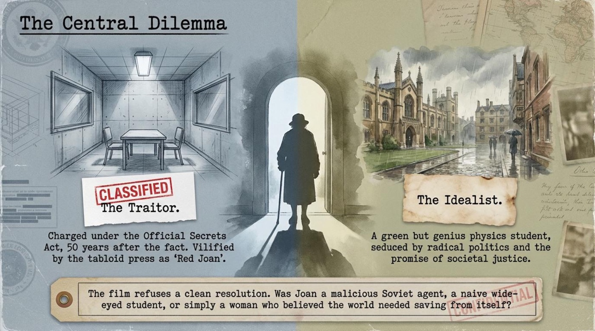
A real scene from the film illustrates the dilemma perfectly: the police knock on the door of a forgetful old lady who cannot quite keep her years straight, and the viewer who has just watched her youth finds the arrest both inevitable and absurd. Pay attention to the grammar of the material, because it mirrors the grammar of power: charged, vilified — the passive voice removes the agent and leaves the victim alone with the verb.
💡 Practical tip: when you tell dramatic stories in English, build the same contrast — short active sentences for the young idealist, heavy passive constructions (was charged, was vilified) for the old suspect. The — a grammatical form in which the subject undergoes the action, often leaving out who performed it. is the sound of bureaucracy.
Two Joans, one mind
Casting is the film’s first masterstroke, and the dossier gives it a full page. Judi Dench plays Joan in the year 2000, and the presentation labels her mode “Guarded Stillness”:
“An 80-something grandmother living a quiet suburban life. Projects a doddery, bemused facade — a woman in whose mouth butter wouldn’t melt — masking a steely resolve.”
The presentation, section “Two Joans”
Every word there is doing detective work, because the frailty is a performance and the performance is the camouflage. Sophie Cookson plays Joan in 1938, under the heading “Restless Idealism”: “Intelligently budding, expanding her political horizons. The film commends her by differentiating her inexperience from sheer naivety.” The distinction matters enormously for the moral question, because an inexperienced person can be misled while a naive one can be used. The presentation ties the two performances together in one sentence: “Both performances anchor an unapologetically feminine perspective, navigating male entitlement and ideological awakenings across 60 years.”
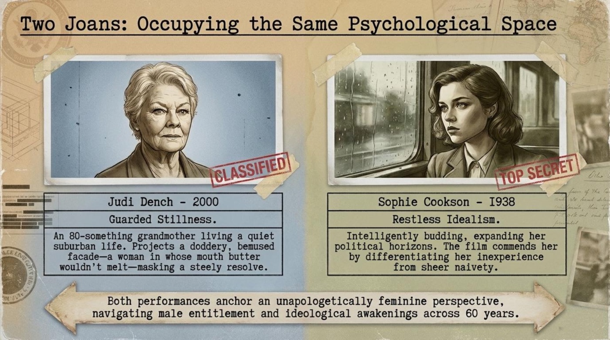
Watch the two timelines side by side and notice the — a technique in which the audience knows more than the character, giving extra meaning to ordinary scenes.: the viewer always knows more about the young Joan than she knows about herself, and always knows less about the old Joan than she knows about herself. That gap is what keeps the audience complicit in her secret.
💡 Practical tip: steal the pairing technique for your own writing — describe a person through a surface adjective and a hidden-quality adjective, as in a doddery facade masking steely resolve. The frame X masking Y is one of the most useful tools in character description.
The making of an idealist
The young Joan’s world opens the way it often does in spy stories — through a window. The dossier’s card “The Catalyst” reports: “Sonia climbs into Joan’s room with movie-star glamour, bypassing strict curfews and opening Joan’s world to radicalism.” A friend who breaks the rules is a far more persuasive advertisement for radical politics than any pamphlet, and the scene lets the audience feel the thrill before the ideology arrives. Then comes the man the presentation calls “The Seducer: Leo Galich”, introduced with his own pet phrase: “My little comrade.” The file lists his traits — “Intense, intellectual, and patronizing” — and sums up the effect: “Joan is swept away by ideas of societal justice and her own budding sexuality.” Pay attention to the patronizing inside the charm: the affectionate nickname places Joan slightly below its speaker, and the film shows her too dazzled to hear it.
The most chilling line in the section is the diagnosis labelled “The Mask”:
“Intellectual seduction and the immediate threat of fascism acted as a smokescreen, masking the long-term dangers of Soviet loyalty.”
The presentation, section “The Seduction of Radical Politics”
In 1938 the fascist threat was visible and urgent, while the Soviet danger was distant and abstract, and that asymmetry did the recruitment work. It should be noted that the sentence structure itself teaches a lesson: two long noun phrases (intellectual seduction, the immediate threat of fascism) are followed by the verb acted, and the metaphor smokescreen arrives like a curtain dropping over the sentence.
💡 Practical tip: learn the influence verbs as a family — seduce, sweep away, urge, press, recruit — and remember that English usually puts the victim in the passive position (she was swept away). Keep smokescreen separate from red herring: a smokescreen hides an existing truth, while a red herring is a clue designed to send you the wrong way.
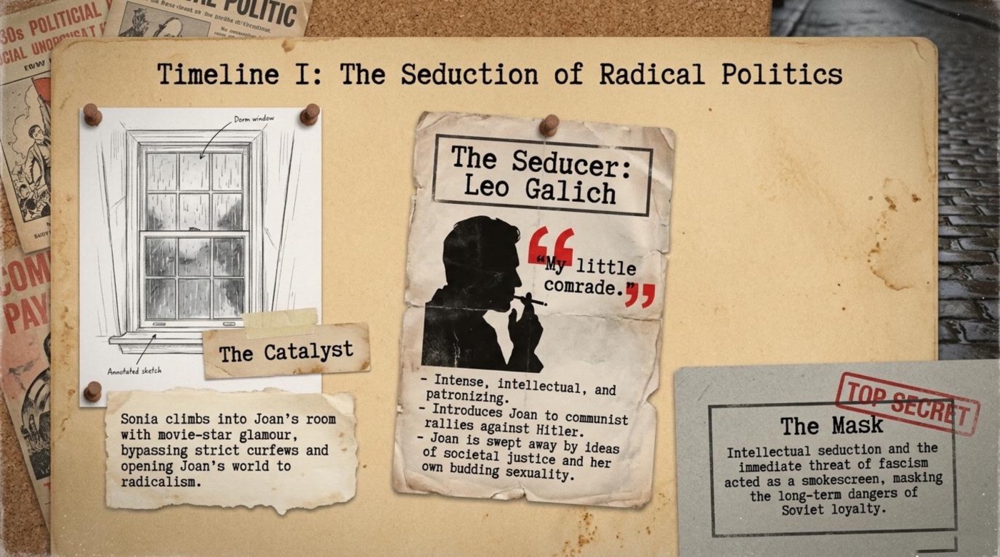
The second timeline: a brilliant woman in a room full of men
The second timeline moves to the “Top-secret British/American nuclear research facility” of the programme known as — the codename of Britain’s top-secret wartime atomic research programme.. The image on that page says more than any paragraph could: one silhouette of a woman typing at a desk, ringed by suited men, with a single caption —
“Joan is a brilliant woman in a room full of men building a weapon they do not fully understand.”
The presentation, section “The Mechanics of Tube Alloys”
The scientists surround her, yet she is the one who understands the mathematics underneath the project. The personal complications arrive with Professor Max Davis, whom the file introduces with unusual honesty: “Joan’s boss and eventual lover. They share a joint view of the world but differ drastically in their implementations. Their relationship is muddled by his inability to secure a divorce.” The phrase differ drastically in their implementations is pure report language, and it quietly foreshadows the tragedy: two people can agree that the world is broken and still choose opposite remedies. Then the past knocks again — the section “The KGB Pressure” states it in three flat sentences: “Leo reappears in Montreal, urging Joan to spy. She repeatedly refuses, until history forces her hand.” The refusal matters, because the film keeps Joan’s loyalty unproven until the world itself applies the final pressure.
📌 Language note: the idiom forces her hand means that circumstances leave a person no real choice. English loves hand idioms for decisions — force someone’s hand, have the upper hand, give someone a free hand — and they transfer easily to business and negotiation English.
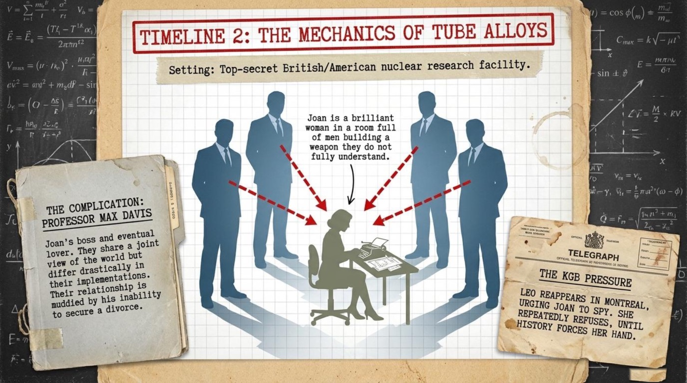
August 1945: the ghost of the mushroom cloud
Every long deception needs a detonation, and the dossier dates it precisely: “The atomic bombings of Hiroshima and Nagasaki shatter Joan’s theoretical detachment from her physics research.” The verb shatter does the emotional work — her physics had lived safely inside equations until the summer of 1945 turned those equations into photographs and ash. The presentation frames the aftermath as a three-step logic chain: “Britain and the US possess an apocalyptic monopoly” leads to “Joan contacts the Galiches to hand over the intelligence,” which leads to “Equalizing the information.” The page then distils her reasoning into the moral centre of the whole film:
“Her sole motive: If superpowers are balanced, mutually assured destruction prevents the weapons from ever being used again. Treason, justified as global salvation.”
The presentation, section “The Ghost of the Mushroom Cloud”
Read the last three words slowly, because treason and salvation belong to opposite moral universes and the sentence welds them together with a comma. The film never mocks her logic and never fully endorses it, and that restraint is what makes the story uncomfortable in the best way.
💡 Practical tip: the three-step chain — the threat, the action, the justification — is an excellent skeleton for argumentative writing: state the pressure, describe the decision, then give the reasoning. The doctrine name — the Cold War doctrine that balanced nuclear arsenals prevent war, because any attack guarantees the attacker’s own annihilation. is standard international-relations vocabulary, and its acronym, MAD, is used in everyday English precisely because the full name sounds like madness.
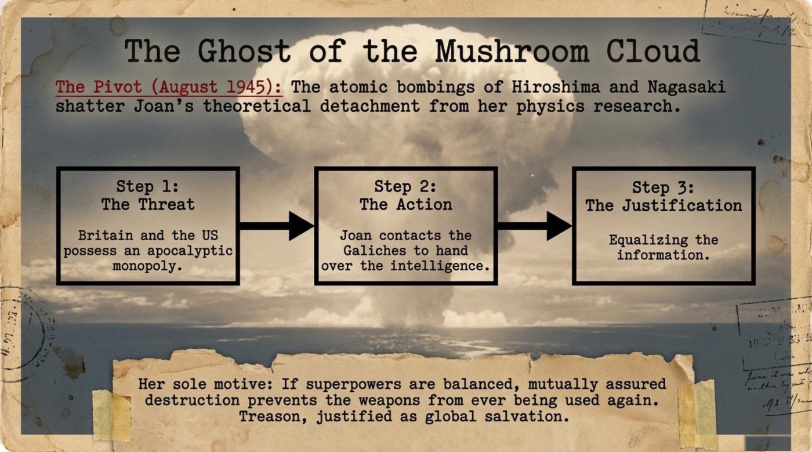
The tactile evidence of treason
The presentation then turns forensic, laying out the physical objects of the case like exhibits on a table. The first tag reads “The Safe: Joan quietly and efficiently removed classified Tube Alloy files from her boss’ safe.” The tag marked as “The Lens” adds: “She photographed the metallurgical research papers and returned them undetected.” Espionage, in this telling, is clerical work with consequences: borrow, copy, return, repeat. An evidence note completes the page with the film’s most deflating truth:
“The quiet, unglamorous mechanics of espionage, executed by a secretary invisible to the men around her.”
The presentation, section “The Tactile Evidence of Treason”
The star exhibit is the jewellery, described as “The Dual-Purpose Locket: The ultimate metaphor of her double life. Left side carries romantic love. Right side carries high treason for her KGB handlers.” The contrast between romantic love and high treason inside one object is the whole film compressed into a pendant, and it deserves its own reading in Part Three below.
💡 Practical tip: notice the adjectives quiet, efficient, unglamorous — the language deliberately shrinks espionage to desk-work size, and the shrinking is the style. Small concrete nouns (a locket, a ration book, a camera) carry more emotional weight than abstract declarations, so keep them in your descriptive toolkit.
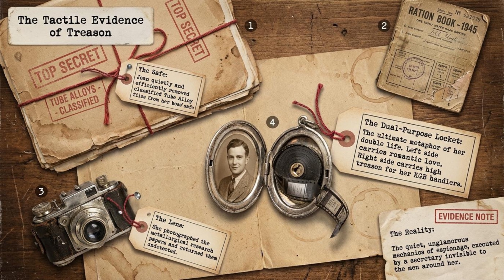
The real “granny spy”
Then the dossier opens the historical file proper, and the layout is a spread titled “The ‘Granny Spy’: The Real Melita Norwood” with two panels, “The Facade” and “The Reality”. The facade side reads: “Melita Norwood (1912–2005). Lived in a suburban semi in Bexleyheath. Drank Co-op tea. Handed out the Morning Star and displayed ‘Stop Trident’ CND posters in her window.” Every detail is aggressively ordinary, and that ordinariness is the point. The reality side stamps her “KGB Codename: HOLA” and lists her service record: role — “Clerk at the British Non-Ferrous Metals Research Association”; impact — “Supplied secrets that brought the Soviet nuclear weapons program ahead by two years”; reward — “Awarded the Order of the Red Banner (1958) and a KGB pension of £20 a month.”
A pension of twenty pounds a month is a quietly devastating detail, because it measures exactly how ungreedy her betrayal was. The page ends with the fact that separates the woman from her screen version:
“Unlike the fictional Joan, Norwood was a steadfast, lifelong Communist recruited in 1935 by Andrew Rothstein, acting out of pure ideological belief rather than just post-Hiroshima shock.”
The presentation, section “The ‘Granny Spy’”
The film compresses sixty years into a crisis of conscience, while history shows a person who never needed a crisis to stay committed. It is important to understand that distinction when you discuss the film, because the fictional Joan is a moral argument and the real Norwood was a lifetime of conviction.
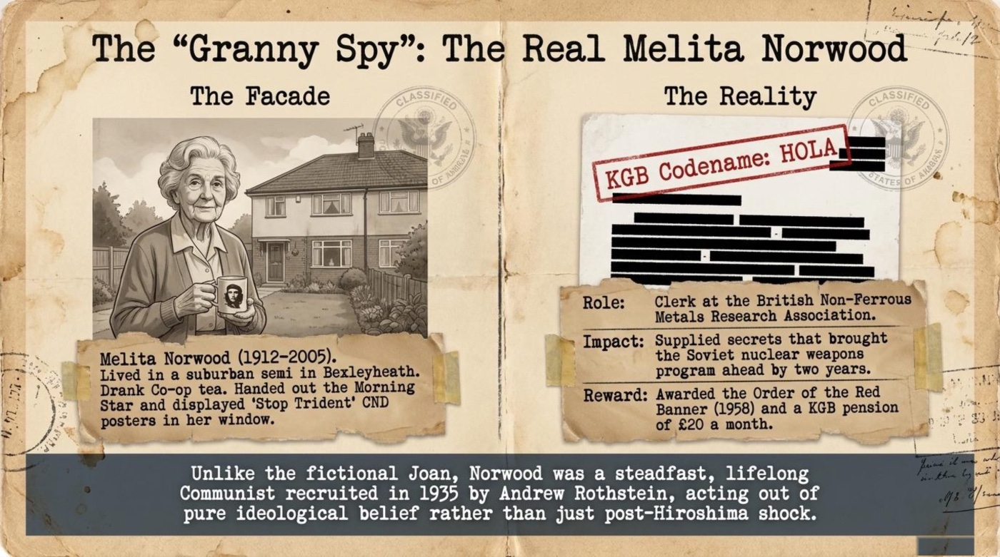
Spies and shadows: the Cambridge context
To judge Norwood fairly, the presentation puts her beside the most glamorous traitors Britain ever produced. Under “The Notorious Men” the file notes: “Profile: Aristocratic, reckless, highly visible.” and adds that “Burgess was known for dropping secret Foreign Office files on pub floors while intoxicated. The KGB eventually dropped Philby entirely.” The verb dropped appears twice in two different senses — first as drunken clumsiness, then as abandonment — and the repetition is quietly witty. Norwood’s tag, “The Unassuming Woman”, records the opposite trajectory: “The KGB never lost contact with her. The Mitrokhin Archive described her as a ‘committed, reliable and disciplined agent, striving to be of the utmost assistance.’”
“The KGB valued the quiet secretary from Bexleyheath far more highly than the notorious, aristocratic men of the Cambridge spy ring.”
The presentation, section “The Cambridge Context: Spies and Shadows” — synthesis stamp
Glamour, in intelligence work, is a liability, and reliability is worth more than a title. The page reads almost like a workplace memo from another universe, and yet its lesson is perfectly ordinary: steady competence outperforms brilliant showmanship.
💡 Practical tip: build your evaluative vocabulary in antonym pairs — reckless / disciplined, notorious / unassuming, highly visible / invisible — because contrasts organise an argument faster than single adjectives ever do.
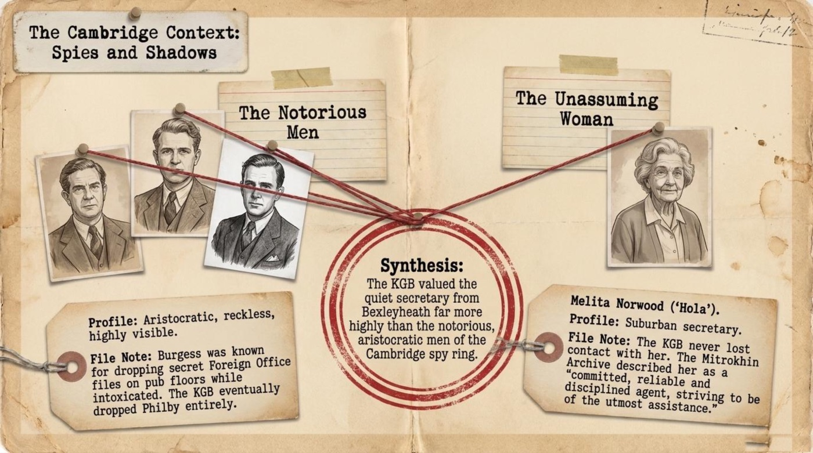
The superpower of invisibility
The next page explains how the invisibility worked, and it reads like a field manual. The heading calls it “The Superpower of Invisibility”, and the diagram carries the thesis: “Joan’s gender acted as her primary defense mechanism.” The accompanying MI5 field notebook lists the causes, starting with the harshest one: “The authorities and her male colleagues possessed a blindness born of misogyny; they could not fathom a young female clerk understanding, let alone stealing, nuclear physics.” The notebook then returns to the film’s moral distinction — “Inexperience ≠ Naivety: The film carefully distinguishes her lack of worldly experience from intellectual naivety. She understood exactly what she was doing.”
It closes with the real woman’s own baffling claim, “I still do not think of myself as a spy,” before landing the conclusion: “Her benign domesticity made her completely invisible to British Intelligence for over 40 years.” The phrase — a harmless, home-centred life; the perfect camouflage for a spy. means a harmless, home-centred life, and it functioned, in practice, as perfect camouflage. The irony is double-layered: the prejudice that insulted her is also the shield that protected her.
📌 Language note: the pattern let alone (they could not fathom her understanding, let alone stealing, nuclear physics) builds a small claim into a bigger one, and it is worth rehearsing aloud. The noun misogyny and the adjective benign both appear constantly in modern journalism, so add them to your active vocabulary.
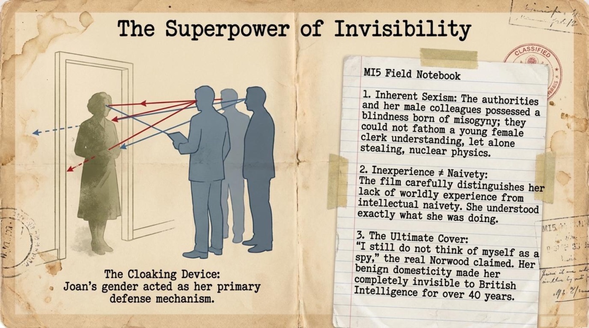
Scoring the silence
The dossier even listens to the film. Its page “The Emotional Register: Scoring the Silence” offers “An analysis of George Fenton’s cinematic soundscape of treason” and breaks the music into three tracks. “Restrained Strings” represents “the tightly wound secrets and the suffocating paranoia of the Cold War era.” “Mournful Piano” highlights “the tragic personal costs — lost loves, betrayals, and the ghost of Leo Galich.” And “The Low Hum of Tension” is “a constant, underlying bass element that guides the audience through the murky, unresolved moral ambiguity of Joan’s choices.”
💡 Practical tip: the adjectives are the lesson — restrained, mournful, suffocating, murky, unresolved form a ready-made kit for any film or concert review. The page also demonstrates a useful review structure: name the element, describe its sound, then name the feeling it produces.
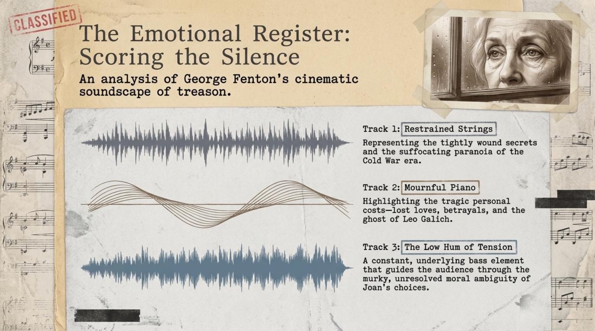
The final interrogation and the grey
History closed the file, at last, in the least dramatic way possible. The final page reports:
“The real Melita Norwood was finally exposed in 1992 by KGB archivist Vasili Mitrokhin, but was never prosecuted due to her age and the potential political embarrassment.”
The presentation, section “The Final Interrogation & The Grey” — “The Unmasking”
A woman who shaped the nuclear balance of the twentieth century escaped the courtroom because prosecuting her would have been awkward. The material pins her own explanation next to the verdict: “I did not want money… I wanted Russia to be on equal footing with the West.” The film’s fictional ending adds the emotional resolution history refused to provide: “Joan’s son initially disavows her, only to eventually stand by her side once he understands her terrifying logic.” The word terrifying does double duty, because the son accepts the reasoning and is frightened by how convincing it is. The material closes on the image of a case stamped Case Pending — a perfect last frame for a story that refuses to close.
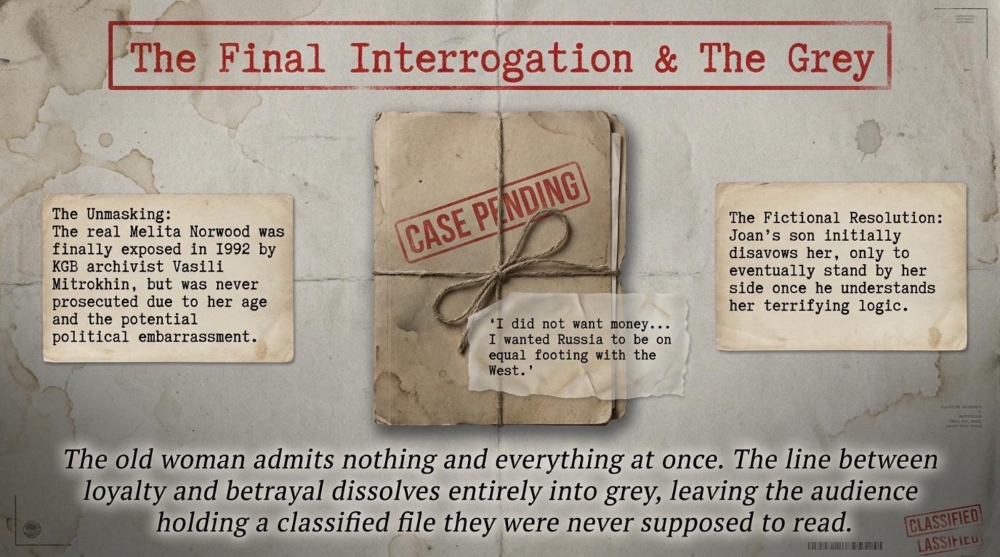
Why this material works for English learners
Three features make this dossier unusually valuable for language study. First, the dual-timeline structure constantly invites comparison language — unlike, while, by contrast, the other pole — which is the scaffolding of good essays. Second, the topic runs the full — the level of formality in language, from intimate and colloquial to official and technical. range, from tabloid hostility (vilified) to intelligence jargon ( — a secret word used by intelligence services to disguise an agent’s identity., handler, archive) to domestic cosiness (Co-op tea, suburban semi), so learners watch tone shift with subject matter.
Third, the material is honest about moral complexity, and complexity forces precise language. Simple stories can be told with simple words, but a story about loyalty and betrayal living in the same person requires the idioms, hedges and contrasts this presentation supplies in abundance. The vocabulary below is therefore not decoration — it is the toolset the story itself demands.
🗣️ Part Two · Vocabulary and Language Takeaways
The words below are the backbone of the dossier’s language. Each entry gives the literal sense, the figurative or contextual sense inside this material, and a direct quotation, followed by the way the presentation itself frames the expression. Read the entries first, then test yourself with the interactive card index that follows.
dodderyadjective
Literal meaning: shaky, slow and feeble, typically because of old age.
Figurative / contextual meaning: the theatrical frailty the elderly Joan performs for the world — an old age chosen, not merely suffered.
From the material: “Projects a doddery, bemused facade — a woman in whose mouth butter wouldn’t melt — masking a steely resolve.” The word sits between bemused and facade, building the image of a staged old age.
How the material explains it: the section heading “Guarded Stillness” and the description “An 80-something grandmother living a quiet suburban life” frame doddery as part of a performance that conceals “a steely resolve”.
butter wouldn’t meltidiom
Literal picture: butter cannot melt in a mouth — a person so prim and cool that nothing warm or messy ever escapes it.
Figurative / contextual meaning: appearing harmlessly innocent, usually deceptively so.
From the material: “…a woman in whose mouth butter wouldn’t melt — masking a steely resolve.” The idiom hides inside the facade sentence, and masking a steely resolve completes the contrast: innocence on the surface, iron underneath.
How the material explains it: the dash construction welds the idiom directly to its opposite, which is exactly how real journalism uses it — innocent appearance first, hidden agenda second.
bemusedadjective
Literal meaning: confused, puzzled, bewildered.
Figurative / contextual meaning: the mild vagueness the old Joan broadcasts to put people at ease.
From the material: “Projects a doddery, bemused facade…” The adjective colours the facade with pleasant vagueness.
How the material explains it: the presentation lists bemused as one of the props of the mask, so its sense here is deliberately vague rather than entertained.
⚠️ Common trap: keep bemused (puzzled) firmly separate from amused (entertained). Mixing the two is one of the most frequent vocabulary errors in written English, and this dossier’s sentence only works with the correct partner — nobody performs an amused facade to hide treason.
steely resolvenoun phrase
Literal meaning: resolve — firm determination — compared to steel, hard and unbending.
Figurative / contextual meaning: the unbreakable will beneath the grandmother performance.
From the material: “…masking a steely resolve.”
How the material explains it: by placing steely resolve right after butter wouldn’t melt, the presentation teaches the collocation through material contrast — steel against butter, metal against softness.
vilifiedverb, usually passive
Literal meaning: spoken of as worthless — from the Latin vilis, cheap.
Figurative / contextual meaning: attacked savagely in public; a character destroyed by media.
From the material: “Vilified by the tabloid press as ‘Red Joan’.”
How the material explains it: pairing charged with vilified shows the legal trial and the social trial running side by side — the courtroom and the front page.
greenadjective
Literal meaning: the colour of unripe fruit.
Figurative / contextual meaning: inexperienced, new to the world — a lack of years, not a lack of mind.
From the material: “A green but genius physics student, seduced by radical politics and the promise of societal justice.” The same sentence demonstrates the passive seduced by, English’s favourite way of describing influence.
How the material explains it: the presentation later sharpens the word with its field-note formula “Inexperience ≠ Naivety… She understood exactly what she was doing”, so green marks inexperience only.
swept awayphrasal verb, passive
Literal meaning: carried off by a current of water.
Figurative / contextual meaning: overwhelmed by emotion or ideas to the point of losing judgement.
From the material: “Joan is swept away by ideas of societal justice and her own budding sexuality.”
How the material explains it: the presentation places swept away directly beside its description of Leo as “patronizing” — the current that carries Joan is created by somebody else.
smokescreennoun
Literal meaning: a cloud of smoke laid to hide military movements.
Figurative / contextual meaning: something designed to obscure the truth; here, anti-fascist idealism hiding the dangers of Soviet loyalty.
From the material: “Intellectual seduction and the immediate threat of fascism acted as a smokescreen, masking the long-term dangers of Soviet loyalty.”
How the material explains it: the verb masking in the same sentence glosses the noun — the presentation defines a smokescreen by what it hides.
unassumingadjective
Literal meaning: not claiming importance for itself; modest.
Figurative / contextual meaning: so modest as to be professionally invisible — a career advantage for a spy.
From the material: the section heading “The Unassuming Woman” and its file note, “The KGB never lost contact with her.”
How the material explains it: the synthesis stamp contrasts the unassuming secretary with “the notorious, aristocratic men”, teaching the word through its opposite.
benign domesticitynoun phrase
Literal meaning: benign — harmless, kindly; domesticity — home and family life.
Figurative / contextual meaning: the harmless housewife image that made decades of espionage possible.
From the material: “Her benign domesticity made her completely invisible to British Intelligence for over 40 years.”
How the material explains it: the notebook item is titled “The Ultimate Cover”, which explicitly defines domesticity as camouflage.
on equal footingidiom
Literal picture: standing on the same ground.
Figurative / contextual meaning: in a position of equal status, power or advantage.
From the material: “I did not want money… I wanted Russia to be on equal footing with the West.”
How the material explains it: the sentence contrasts money with equal footing, separating greed from ideology in a single line.
mutually assured destructionterm
Literal meaning: destruction guaranteed for both sides.
Figurative / contextual meaning: the Cold War doctrine that balanced nuclear arsenals prevent war, because an attack guarantees the attacker’s own annihilation.
From the material: “If superpowers are balanced, mutually assured destruction prevents the weapons from ever being used again. Treason, justified as global salvation.”
How the material explains it: the presentation presents the doctrine as Joan’s “sole motive”, showing how a technical term becomes a personal justification.
Your interactive card index
The eight most valuable expressions are collected below as a flip-card deck. Click any card to turn it over and check the full entry — literal meaning, contextual meaning, an example from the material, and a note on why the expression matters. The deck supports the keyboard as well: Tab to a card, then press Enter or Space to flip it.
🎭 Part Three · The Deeper Meaning — Metaphors and Symbols
A dossier this well-built hides its deepest meanings in objects and images. The four elements below carry the film’s argument without a single line of dialogue, and each one is explained by the presentation in its own words.
The dual-purpose locket: a double life you can hold
The jewellery exhibit is the presentation’s most explicit symbol, and its reading is worth quoting in full: “The ultimate metaphor of her double life. Left side carries romantic love. Right side carries high treason for her KGB handlers.” A locket is a private object — worn against the skin, opened only by choice — and that privacy mirrors — the spy’s mental discipline of keeping the separate parts of a double life strictly apart., the spy’s core mental discipline. The object lets the film hold both truths about Joan in one place: the woman who loved and the woman who betrayed, fused at the hinge. The symbol also explains her survival, because people who carry a single identity break under pressure, while Joan carried two that never touched — the hinge between them, like the locket’s, stayed closed.
The ghost of the mushroom cloud: when equations become photographs
The bombing image is the story’s moral hinge, and the dossier names it precisely: “The atomic bombings of Hiroshima and Nagasaki shatter Joan’s theoretical detachment from her physics research.” Before that summer, her science is abstract; after it, abstract knowledge carries corpses. The page even calls the bombings “The Pivot” — the mechanical term for the point on which a system turns — and the word choice is exact. The ghost in the section title matters as well: Hiroshima never appears again in the plot, yet it stands behind every decision Joan makes afterwards, the way a ghost stands behind a living person. The closing line of that page — “Treason, justified as global salvation” — shows the final state of her moral bookkeeping, where the shadow of the cloud converts a crime into a rescue.
The cloaking device: invisibility as a superpower
The most socially pointed symbol in the material is the diagram labelled “The Cloaking Device: Joan’s gender acted as her primary defense mechanism.” The irony is double-layered: the prejudice that insulted her is also the shield that protected her. The MI5 field notebook sharpens the point — investigators “could not fathom a young female clerk understanding, let alone stealing, nuclear physics” — so her superpower was manufactured by the very society she betrayed. Read as social commentary, the symbol states that invisibility is imposed on women and then exploited by one of them. The real Norwood’s caption, “Her benign domesticity made her completely invisible to British Intelligence for over 40 years,” turns the metaphor into biography.
The fractured dossier: grey as a moral colour
The title of the presentation, The Fractured Dossier, names the method as well as the object: a file split into two timelines, two actresses, two verdicts. Fracture is the film’s honesty, because a smooth narrative would force a verdict, and the material insists on the opposite:
“The old woman admits nothing and everything at once. The line between loyalty and betrayal dissolves entirely into grey, leaving the audience holding a classified file they were never supposed to read.”
The presentation, closing statement of “The Final Interrogation & The Grey”
Grey, in this dossier, is not vagueness — it is precision about a case that genuinely contains both treason and salvation. The stamp Case Pending on the final page completes the symbol, since a pending case is the paperwork equivalent of an unresolved chord. The audience, like the son in the film, is left holding the file and the judgement it never quite authorises.
🧠 Part Four · Comprehension Check — Test Your Own File
The dossier closes with a field test, and the rules are simple. Eight questions cover the story, the vocabulary and the history, and every answer is checked instantly with an explanation drawn from the material. The scoreboard above the questions tracks your progress dot by dot, and the result panel at the end offers a full reset.
📌 Conclusion · The Final Entry in the File
The most powerful sentence in the material belongs to the real woman: “I did not want money… I wanted Russia to be on equal footing with the West.” Whatever a court would call that sentence, a language learner should call it a masterclass in clarity — two short clauses, one contrast, no hedging. The presentation’s closing verdict is equally instructive: “The old woman admits nothing and everything at once,” which is exactly the double meaning the whole dossier has been teaching the reader to hear.
The takeaway for English learners comes straight from that final page: real stories live in the grey, and the language of the grey — idioms, contrasts, passive constructions, precise adjectives — is what this material has now put in your notebook. Retake the quiz until the dots run green, revisit the card index before the phrases fade, and watch the film with subtitles to hear my little comrade and equal footing spoken aloud. Then write your own three-sentence verdict on Joan Stanley, using at least five expressions from this article — your classified file will be worth reading.
📎 Lesson Files
Everything listed below sits in the same folder as this page and opens in a new tab.
Compiled from the visual dossier Red Joan: The Fractured Dossier and the film it studies · All quotations belong to the source material.